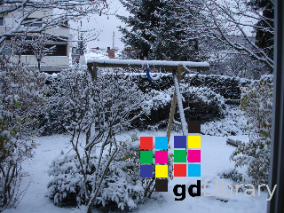

Example #1 Adding watermarks to images using alpha channels
<?php
// Load the stamp and the photo to apply the watermark to
$stamp = imagecreatefrompng('stamp.png');
$im = imagecreatefromjpeg('photo.jpeg');
// Set the margins for the stamp and get the height/width of the stamp image
$marge_right = 10;
$marge_bottom = 10;
$sx = imagesx($stamp);
$sy = imagesy($stamp);
// Copy the stamp image onto our photo using the margin offsets and the photo
// width to calculate positioning of the stamp.
imagecopy($im, $stamp, imagesx($im) - $sx - $marge_right, imagesy($im) - $sy - $marge_bottom, 0, 0, imagesx($stamp), imagesy($stamp));
// Output
header('Content-type: image/png');
imagepng($im);
?>